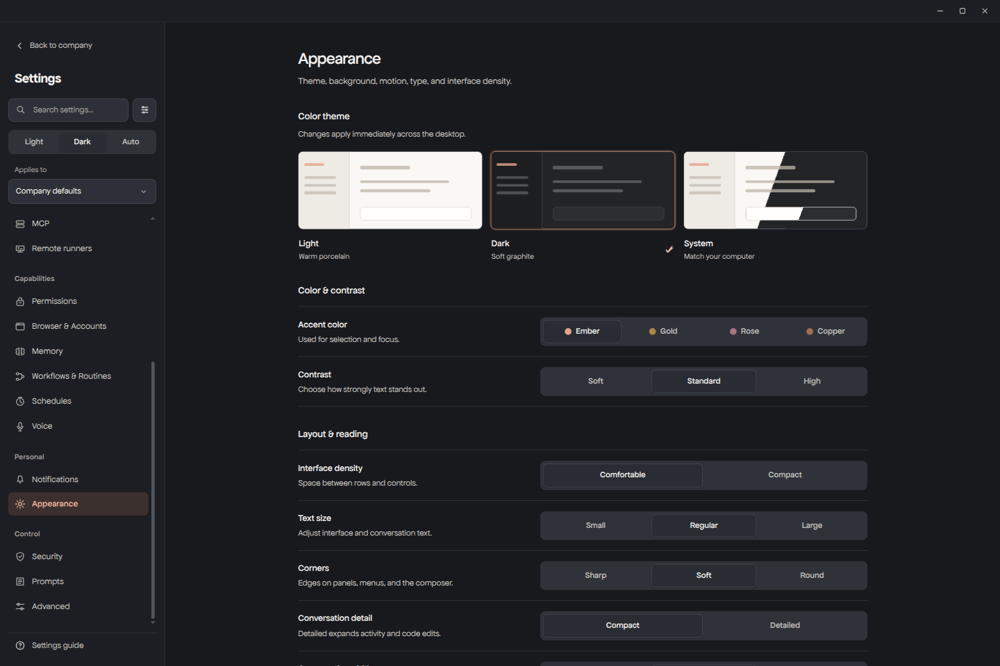

Start from a task, not a list of tools. Phoenix brings the conversation, files, browser and coworkers together.
Example briefExplore, not a live run
Build a clear landing page for my product. Show what it does, make the mobile version work, and test the main actions.
A website you can open and use.
Iris handles the interface. Theo can research assets and facts. Leo can check the code and interactions. You can inspect the files and the page as the work develops.
People-shaped roles. One workspace.
Meet your other coworkers.
Talk to Phoenix to coordinate a task, or go straight to the coworker you need. Their roles make the work easier to follow.
Your point person
Phoenix helps break down a task, bring in the right coworkers, and give you one clear response.
The rest of the team +
NicoMessages & correspondence
MayaCalendars & coordination
VeraCosts & purchasing
OwenRelationships & follow-ups
JuneContent & publishing
CleoOperations & routines
Help with the work. Not the last word.
Your computer. Your call.
Phoenix gives AI tools access to real work. That makes clear boundaries just as important as capability.
Choose the workspace
Start inside a selected project. Broader access is a separate permission choice.
Choose the models
Connect the providers you use and assign models to different jobs.
Keep the work visible
Inspect files, tool activity and coworker contributions. Stop a task when you need to.

A workspace that feels like yours. Actual settings from the current app.
Local-first does not mean offline AI. Phoenix keeps workspace and conversation state on your machine. Your chosen model providers and connected services receive the data needed for their requests.
Before you dive in
A few straight answers.
Is Phoenix available to download?+
Phoenix is in development, with Linux as its current target. This page is a product preview. Public downloads, pricing and a release date have not been announced here.
How is it different from a chatbot?+
The conversation sits beside tools for files, code, the browser and desktop apps. Coworkers can carry out steps and return their work in the same place, instead of only telling you what to do.
Can it use my existing AI accounts?+
Phoenix supports multiple model providers and account-based routes. The providers and models available to you depend on your accounts and their supported connection methods. Provider usage limits still apply.
Does it work completely on its own?+
You can give Phoenix a task that involves several steps and coworkers. Results still need review, and some actions need your input or permission. Reliability is being actively tested; this preview is not a promise of error-free autonomous work.
What happens to my files?+
Phoenix works in the workspace you select. It can read or change files within the permissions you grant. Model and connected-service requests may include relevant task content, so choose providers and access settings appropriate for your work.